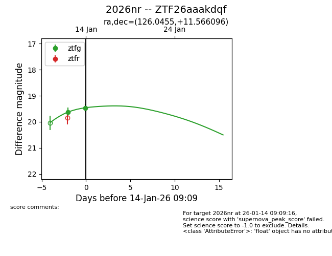
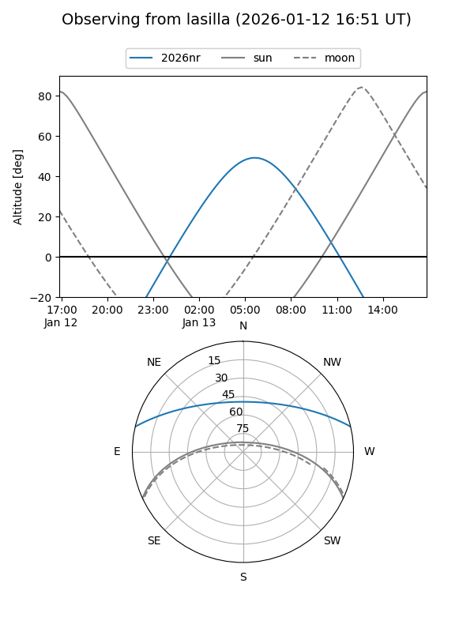
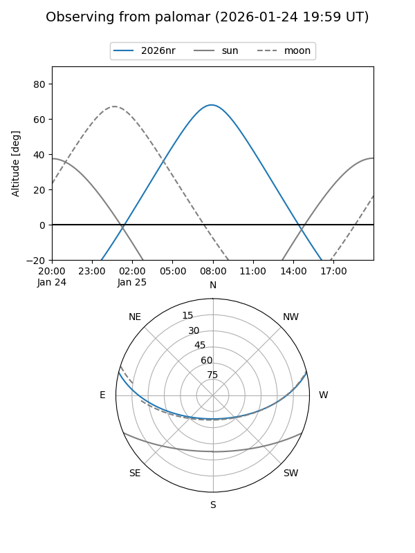

2026nr
Target 2026nr at 2026-01-26 09:36
Aliases and brokers:
FINK: link
Lasair: link
ALeRCE: link
TNS: link
YSE: link
alt names
ZTF26aaakdqf (ztf,fink_ztf)
2026nr (tns,yse)
Coordinates:
equatorial (ra, dec) = 126.0455,+11.56610
equatorial (HMS+DMS) = 08:24:10.93,+11:33:57.95
galactic (l, b) = (212.7692,+25.76704)
Flags:
Photometry:
last ztfg=19.53, ztfr=19.55
4 ztfg, 5 ztfr detections
Lightcurve

Visibility


Additional plots